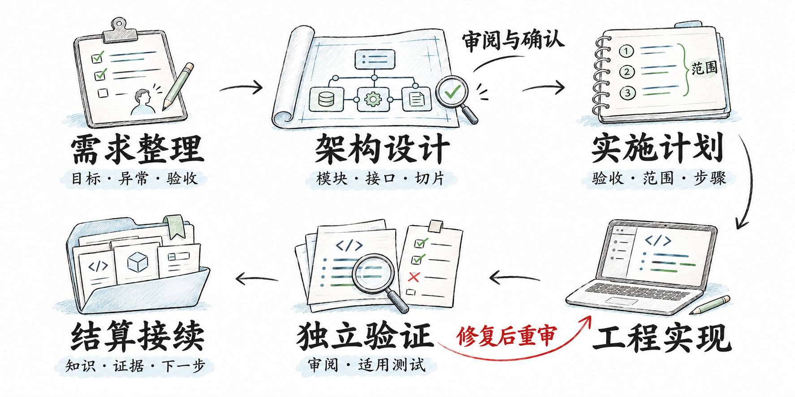
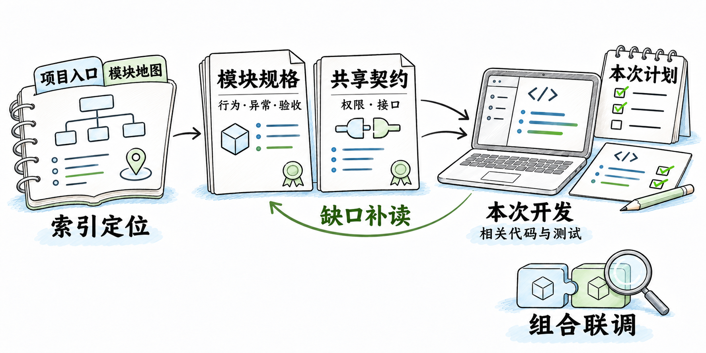
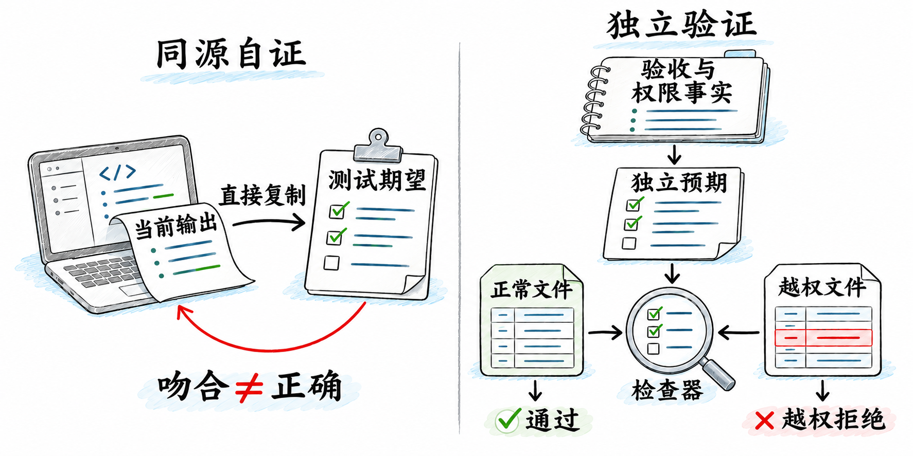
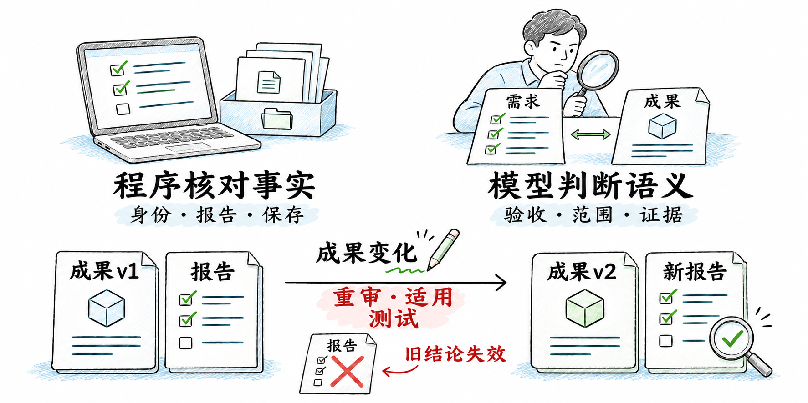

工程实践
AI 说“完成了”，然后呢？
从会写代码到可交付的 Agent
你让 AI 补一个功能。它改了代码，跑了测试，最后回复：“已完成，全部通过。”
打开页面，按钮确实有了，下载的内容却没按筛选条件来。再看失败分支，接口报错后页面还停在加载中。测试也确实运行过，只是那些用例都建立在它自己对需求的理解上，没有检查这两件事。
几轮修补之后，功能能用了。过几天换个会话，又得重新解释当时的决定，翻出做过的检查，确认哪些边界还没验证。写代码省下的时间，有一部分花在了核对和交接上。
“执行结束”“检查通过”和“用户目标达成”之间，并没有天然的等号。要接收一项 Agent 的工作，需要知道它依据什么实现，检查实际覆盖了什么，以及这些结论对应哪一份成果。下面从一个具体功能谈起。

01 / 交付标准，要先于实现
交付标准，要先于实现
先问：最后要拿到什么
案例中的验收假设要给业务系统增加“导出订单”功能。用户已经确认：导出遵循当前筛选条件，只包含当前账号有权查看的订单；成功时下载有效文件，失败时明确提示，并允许再次尝试。
新增按钮、接口和下载逻辑，是实施动作。验收还要落到结果上：导出的订单应与筛选和权限共同确定的集合一致，文件可以正常使用，服务失败时不能显示成功，失败后也不能留下一个再也点不动的按钮。这些要求要在实现前确定，否则很容易按现有代码已经做到的事情，倒推一份“完成标准”。
异常处理也需要决定具体行为。“允许重试”只写四个字还不够：失败后是否恢复按钮，是否保留筛选条件，用户从哪里知道刚才没有导出成功。这些会影响用户操作，不宜留给开发者在写代码时各自补齐。
接收成果时，除了功能本身，还应拿到检查结果和尚未确认的边界。例如筛选与权限已经验证，但大文件尚未覆盖，就应直接说明。下一次修改也需要找到当前规则、实现位置和证据，不必从一段“全部通过”的聊天回复里重新调查。
把工作从聊天里拿出来
聊天中常常混着几个版本的想法：先提一个方案，讨论后改了，实施中又发现限制。后来接手的 Agent 需要的是最终生效的依据，不能靠重读整段历史来猜。
可以把一次有明确交付目标的工作保存为 Task，记录目标、依据、范围、当前阶段和结果。它只负责这一次交付；需求讨论、订单导出、权限改造没有必要都塞进一个长期不结束的任务。
实施计划之前，先确认需求和设计是否足以支持实施。 已有规格把行为、异常和验收说清楚了，就直接复用。若只有“支持导出订单”这样的想法，应先补齐用户要求。复杂功能涉及多个模块时，还要先确定各自职责、接口和依赖，把工作切成能够单独验收的部分，再选择一部分制定实施计划。切片也不能把关键行为切丢：前端按钮做完、后端接口做完，都不能代替一次完整导出。
设计成果需要独立审阅，涉及尚未确认的产品决定时，再请用户确认。这里不要求每次重做设计；判断依据是现有材料能否写出可观察的验收，以及实施者是否还得自行猜测业务行为。
实施计划随后说明这次改哪里、什么结果算完成、依赖什么、怎样检查。小修改一段话就够。范围和验收写下来后，开发中发现的缺口才容易被看见：可以补充设计、调整计划，必要时交给用户决定，而不是把新的产品承诺藏在“顺手优化”里。
02 / 依据充分，才能独立推进
依据充分，才能独立推进
让需求能被独立读懂
把记录保存成文件，还不等于下一位 Agent 就能正确使用。全部文档、历史聊天和代码一起加载，当前规则可能与旧提议混在一起，无关模块也会占据注意力。
《Lost in the Middle》（TACL 2024）在所测任务中发现，相关信息位于长上下文中间时，更难被有效利用。这个结果不能直接推广到所有模型和所有开发任务。组织需求时，仍要考虑信息放在哪里、通过什么入口找到。
一种实用的组织方式，是让模块规格围绕完整的用户能力展开。订单导出的筛选、下载和失败重试写在一起，前后端实施者都能看到整条行为；技术接口再按需要引用。若按聊天轮次或代码目录拆需求，往往每份文件都说得通，拼起来却缺了业务的一段。
权限这类共享约束，应在一个权威位置完整定义，模块规格引用它。多处复制近似说法，刚开始方便，规则变化后却很难保证同步。导出模块可以说明自己如何使用权限规则，不必再发明一套“导出权限”。
项目入口和模块索引负责指路：当前任务涉及哪个模块，规格在哪里，共享契约该读哪份，代码和测试从哪里进入。实施者先取得目标模块、相关约束和本次计划，发现依赖或缺口后继续补读。按需加载的前提是入口可靠、引用充分，而不是规定每个 Agent 只能读几份文件。
如果起点是一份总需求，拆分时还要记录各部分的去向。有些要求归入模块，有些进入共享规则，另一些仍待决定。不能因为拆分后的文档更整齐，就默认原来的要求都保住了。
规格应能支持一个没有参加过设计聊天的人开展工作。接口仍有歧义，就先澄清；让两边各猜一种解释，只会把问题推迟到联调。并行实施之后，仍需检查组合起来的完整路径，各模块分别通过的报告并不能证明它们接在一起也正确。

03 / 检查要能推翻实现
检查要能推翻实现
测试全绿，为什么仍然不够
回到订单导出。若先运行一次程序，再把导出的内容存成期望值，以后的测试只能说明结果有没有变化，不能说明第一次是否正确。若 Mock 一个成功响应，只断言下载方法被调用，也没有检查服务是否遵循筛选和权限。
这类测试与实现共享了同一个未经核实的假设。它们彼此吻合，用户要求却可能同时被漏掉。
期望值需要有独立来源。 可以按已确认的筛选规则和权限事实，准备一组能够控制的数据：有权访问且满足筛选的订单、筛选外的订单、无权访问的订单。先确定哪些记录应该导出，再检查实际文件。数据较复杂时，也可以检查范围、包含关系、唯一性等不变量，不必把一个样本的每个字节都固定下来；关键是这些判断来自要求，而非当前输出。
接着还要验证检查本身能否发现错误。例如准备一份格式正常、可以打开，却刻意混入越权订单的文件。检查器应拒绝它，并且失败原因应指向越权记录。如果坏文件仍然通过，检查就漏掉了权限；如果失败只是因为文件损坏、依赖缺失或运行超时，同样没有证明它检查了权限。
这就是负向控制：让一个已知错误触发预期的失败。也可以故意改错实现，或设置一个错误期望，观察原来的检查能否将它挡住。报告中保留输入、执行命令、实际观察和拒绝原因，才能判断这次失败是否有意义。

退款场景也一样。渠道只返回“受理”，页面却显示“已退款”，这是状态语义错了。可以故意把“受理”映射成“成功”，看检查是否因此失败。检查若只关注接口返回成功，就可能放过这个错误。
单元测试和 Mock 适合在开发时快速定位逻辑，也能让某些失败条件稳定出现。但它们使用了替代依赖，不能据此宣称真实服务、权限数据、浏览器和下载文件组成的整条路径已经通过。订单导出需要从适用的真实入口操作，检查最终文件及失败后的页面行为。真实环境缺失，就把相应部分记为未执行或阻断，局部测试的通过不能补上这块证据。
负向控制也有边界。拒绝一份越权文件，只说明这类已知错误能够被识别；筛选规则是否有遗漏、其他异常是否处理正确，仍要分别检查。它检验的是检查的区分能力，不是一次性证明软件没有缺陷。
独立检查，要独立到哪里
让另一个 Agent 看完作者总结再写审核意见，容易变成对同一套解释的确认。作者认为难点在哪里、哪些地方已经处理妥当，都会影响审核者把注意力放在哪里。
Review 应从独立上下文开始：读取目标、验收、范围、正式依据、实际成果和执行证据，不读取作者或主管聊天中的自评。审核者据此检查要求是否遗漏、改动是否越界、期望值是否有独立来源，以及现有证据能否支持结论。验收写错了，也应提出质疑，而不是只检查代码是否忠实执行了错误要求。
开发者仍要做自己的单元测试和定向检查。独立 Review 通过、阻断问题处理并复审后，适用的工作再进入独立 Test，由测试者验证用户结果和相关回归。两项责任有先后：先审阅成果与验证依据，再执行正式的独立测试，能避免带着已知的需求或实现问题继续验收。
发现缺陷后，修复的成果需要重新审阅，并执行适用的重测。修改了被审阅的文件，就不能继续拿旧报告证明新版本；重测范围则根据改动影响确定，无须每次重跑所有检查。
这里的独立主要来自责任和信息来源。相同模型在分离的上下文中可以承担不同职责，换一个模型也不会自动获得独立证据。多个模型若都沿用同一个错误期望，仍可能一致通过。隔离作者叙述能减少一种偏向，无法消除所有漏检。
04 / 把证据留在项目里
把证据留在项目里
程序守住事实，模型承担判断
提示词可以要求先审核、再执行适用测试，但还需要核实这些工作是否真的发生。报告是否存在、提交者是否属于当前 Task、必要成员是否已经结束、文件是否保存，这些都是程序能够检查的事实。
程序也可以记录报告对应的交付文件及其版本，发现文件变化后，阻止沿用旧结论。这里要先约定审阅范围：代码交付绑定实际代码路径，收尾补写的记录作为结算输出；文档交付的成果就是文档，需要绑定相应文档。若回写时又实质改变了正式规则或验收，就属于需要重新审阅的变更。
但计划中存在“验收”一节，不代表验收充分；测试报告保存成功，也不代表测试观察到了业务结果。程序核对这些事实，可以拦住缺报告、版本不一致或成果未保存的收尾，却不能据此判断订单集合是否符合用户要求。
业务语义仍要由主管和独立检查者依据规格、实际成果与证据判断。程序不必从自然语言中猜出一套完整业务门禁，模型也不能用一句“已经完成”替代报告和保存事实。两边各自承担适合的责任，问题出现后才知道该检查规则、实现，还是证据。

流程的重量，要与风险相称
验证范围应在计划里说清楚，按影响选择。单纯修改文案、颜色或间距，没有改变事件、状态、请求和数据，也没有触及公共布局或共享设计令牌，可以做独立 Review 和必要的展示检查后结算，无须额外设立 Test 阶段。
局部行为变化需要定向验证。后端函数或接口变化，开发者运行相应单元和接口集成检查；页面交互变化，再走一条聚焦的真实浏览器路径。独立 Test 覆盖本次验收和相关回归，不把每次小改都扩成全产品验收。
涉及共享契约、数据迁移、权限、状态机、公共布局等变化，影响可能穿过多个模块，应扩大验证范围，并说明为什么需要跨模块或全量检查。订单导出涉及权限，界面上即使只多了一个按钮，也不能按纯展示处理。
代码行数不适合代替风险判断。改一行权限条件，可能改变整个数据范围；调整一段说明文字，通常不需要运行完整业务链路。减少无关检查是为了让验证集中在真正可能出错的地方，必需的独立责任仍要保留。
最后一公里：让项目记住
订单导出通过检查后，当前规则和验证结论还需要回到项目中。规格应反映已经确认的行为与实现状态，代码和检查入口应能找到，关联待办和遗留问题也应更新。只把结果留在当前聊天里，下一位接手者仍得重新调查。
记录时要区分设计要求、代码事实和运行证据。规格要求失败后能够重试，是要求；代码里存在恢复按钮的分支，是实现观察；真实操作服务失败后成功重试，才是对应的验证结果。看到接口存在，不能写成浏览器已经验收；跑通一次成功导出，也不能顺带确认所有异常分支。
证据要能对应到被检查的成果、输入和环境。检查完成后若代码又有变化，原报告仍可以作为历史记录，但不能继续代表当前状态。结算中的引用也要指向实际保存的文件，避免留下一个只有原会话知道在哪里的结果。
未验证事项应直接写明，并说明它影响哪些结论。例如只测过同一账号，就不能确认跨账号隔离；尚未检查大文件，就只陈述已测数据规模下的观察。没有必要把每个未知都补成一项实施承诺，但不能把它从交付说明里抹掉。
这样下一次工作可以从现有规格、代码和证据继续：哪些决定已经生效，哪些检查需要因本次改动重做，哪里仍需补充依据，都有地方查。接手者不必相信上一位 Agent 对“完成”的解释，可以直接核对它留下的成果。